Bem-vindo ao manual interno da Bennys.
Este manual foi organizado para servir como base de treinamento, consulta rápida e padronização de atendimento da equipe.
Use este manual como referência oficial para o funcionamento da mecânica.
Atualizado 02/10/2026
A estrutura principal da Bennys é composta por:
Toda a equipe deve respeitar a linha de gestão da mecânica, buscando manter:
Todos os membros da Bennys devem:
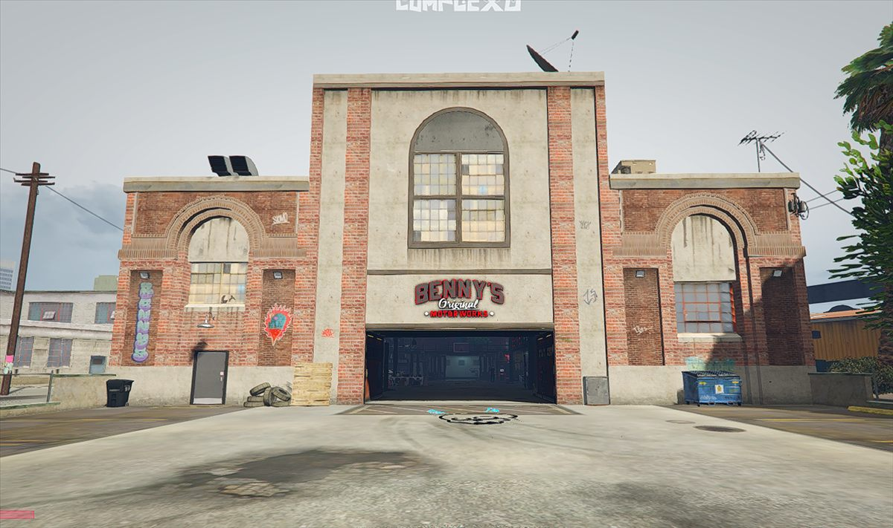
A mecânica tem 4 baias internas e uma externa, além da baia de atendimentos para helicóptero, podendo cada uma ser utilizada por um veículo.
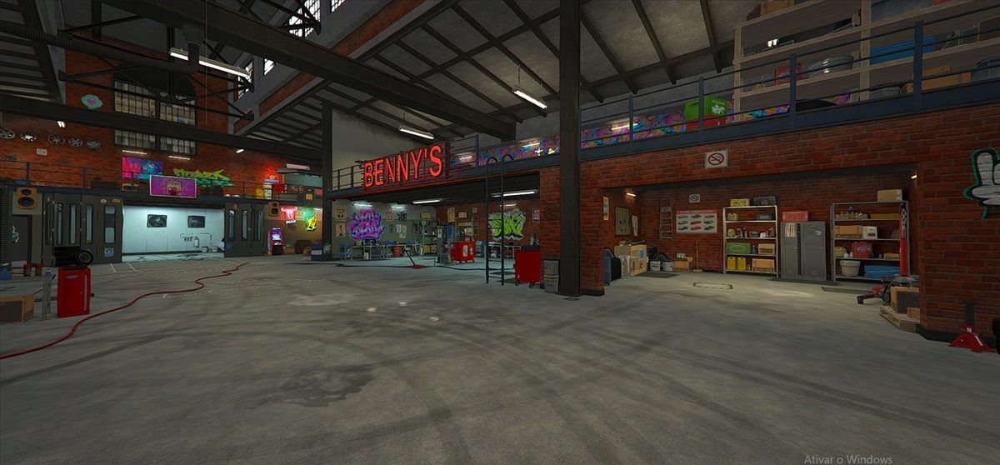
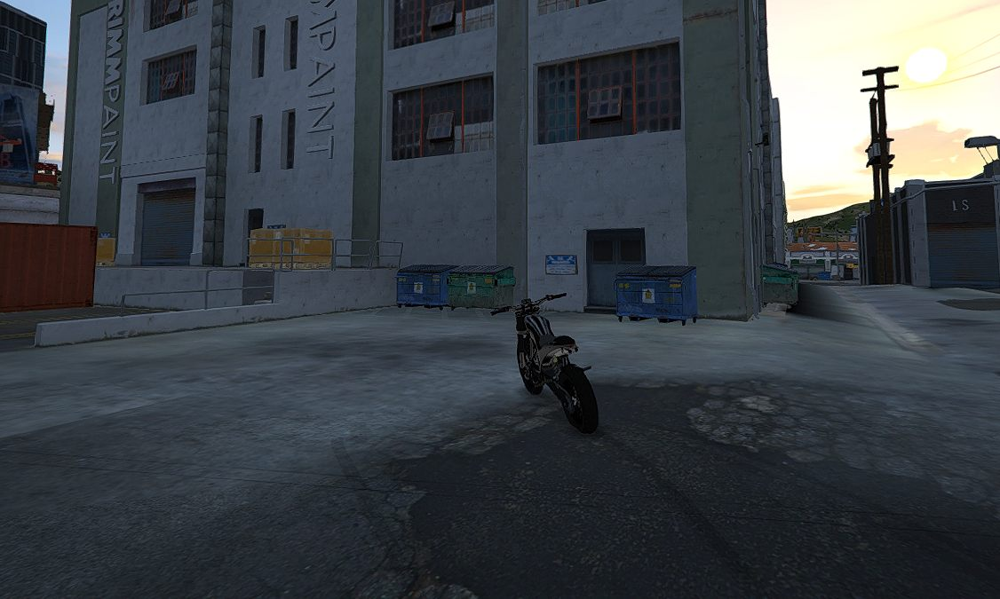
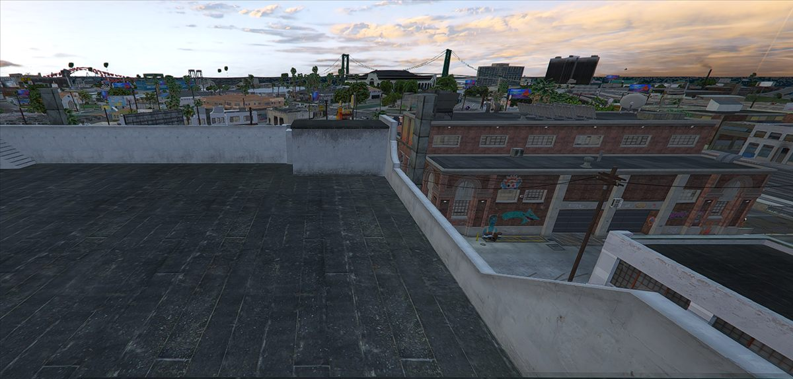
Sempre que for começar a trabalhar, abrir a empresa na sala do vestiário e o portão frontal.
Abrir as portas laterais APENAS para a entrada de veículos maiores.
Lembrar SEMPRE de fechar a empresa quando for o último a sair de serviço e TODAS as portas da mecânica.
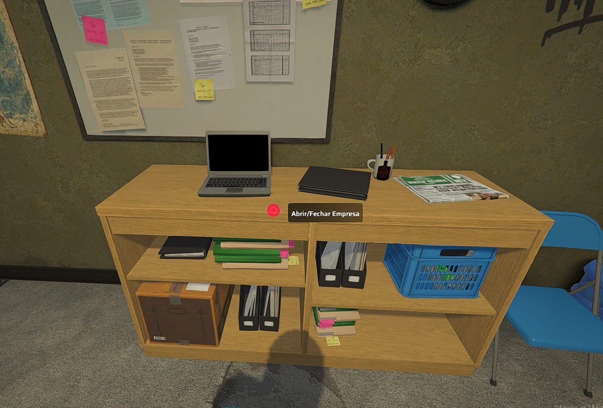
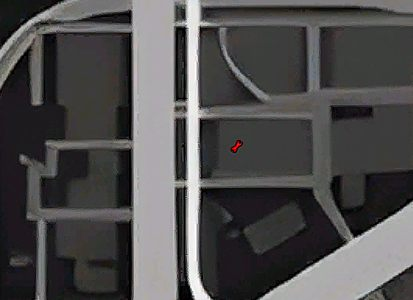
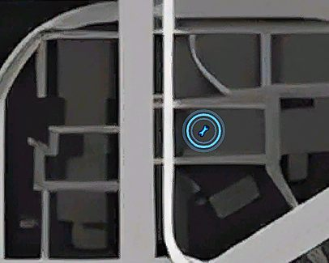
Na esquerda o armário onde devem ser colocadas as metas e retirado os nitros, e na direita a produção de Nitro.
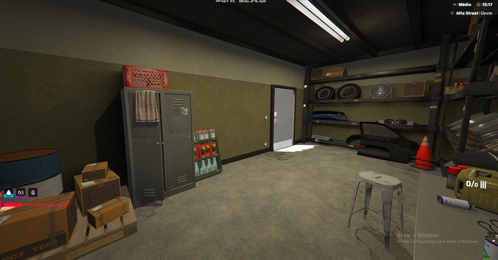
O Farm de Nitro deve ser para a Meta Semanal ou para uma quantia de uso próprio.
PROIBIDO estocar Nitro em casa. Mantenha apenas o nitro da sua mochila que servirá para uso e evite quantidades exorbitantes.
Todo item retirado e vendido deve ser registrado no canal Vendas do DC.
Toda venda de nitro ou trava deve ter um valor repassado para a empresa.
É PROIBIDO vender nitro para lucrar 100% para si, passível de punição EXTREMA.
O nitro é dividido em 50% e a trava só será cobrado o preço de custo.
Deve repassar uma parte da venda para o PIX 7697 - Bruno Gonçalves e registrar na aba Vendas.
| Quantidade | Valor unitário | Valor repassado p 6680 |
|---|---|---|
| Padrão | R$5.000 | R$2.500 |
| +100 | R$4.000 | R$2.000 |
| +200 | R$3.500 | R$1.750 |
| +1.000 | R$3.000 | R$1.500 |
Deve repassar R$5.000 da fabricaçao das travas para o PIX 7697 - Bruno Gonçalves e registrar na aba Vendas.
| Quantidade | Valor unitário |
|---|---|
| Padrão | R$7.000 |
| +100 | R$6.500 |
| +500 | R$6.000 |
Utilize SEMPRE a calculadora para facilitar o trabalho.
Evite falar alto para não atrapalhar os colegas nas outras baias.
Proibido remover Tuning/Blindagem de veículos, permitido apenas opcionais (Suspensão, 2Step) seguindo o pedido do cliente.
Os mecânicos em serviço devem seguir a fila de atendimento, sem passar na frente uns dos outros.
Sempre converse com os mecânicos em serviço no momento para estabelecerem a fila e evitar estresses entre os funcionários nos atendimentos.
Cada item instalado gera custo imediatamente na sua conta então tenha certeza quando aplicar.
Caso esteja sem dinheiro, confirme o preço com o cliente e peça, um adiantamento antes de aplicar.
Sempre confirme com o cliente a certeza de cada item.
Depois de aplicado, não tem volta e o item será cobrado.
Quando o cliente perguntar:
"Quanto sai um full tuning?".
O procedimento correto é:
Um Full Tuning consiste dos seguintes itens.
O 2 Step é opcional e não faz parte do Full Tuning, sempre pergunte ao cliente se tem interesse.
Quando o cliente perguntar o que é mais caro ou mais barato:
Se o cliente perguntar o preço de um item sem estar com o veículo na mecânica, informe que:
Nem todo carro terá todas as opções disponíveis.
Exemplos:
Apenas verificando cada aba para ter certeza de todas opções.
Alguns itens podem travar o carro no chão.
Quando isso acontecer, use o elevador para destravar.
Durante o atendimento:
É permitido navegar pelos itens para mostrar ao cliente como ficará a estética do carro.
Exemplos:
Se o cliente não gostar, basta voltar no ESC.
Para aplicar de fato, use ENTER.
O maior cuidado deve ser dentro da categoria Pintura.
Ao navegar pelas cores, se o cliente não gostar e quiser voltar:
Dentro das opções de Primária e Secundária Camaleão, já é possível navegar para o lado e mostrar as variações ao cliente.
Em Primária e Secundária Especial, é possível personalizar na seleção de cores, onde dá para navegar pelo RGB e mostrar as opções.
Em Primária e Secundária comuns, as cores já são pré-definidas. Basta clicar para mostrar ao cliente.
Em qualquer opção de pintura, caso o cliente não goste da cor ou desista:
Para retirar o Perolado, deve ser aplicado Perolado Preto.
Por ser o item mais caro, sempre pergunte sobre a blindagem no Full Tuning e se o cliente pedir faça o orçamento antes de aplicar.
Suspensão é um item que varia muito de gosto para gosto.
A suspensão full mais baixa muda conforme o carro, e em alguns veículos pode pegar em calçadas ou dificultar o uso.
Por isso, sempre pergunte:
Quando o cliente pedir o item que faz os barulhos de escape, o nome correto é:
Esse item fica dentro da opção Preparação.
Se o carro não tiver nitro aplicado anteriormente, não adianta apenas comprar o nitro.
Antes, é necessário aplicar na máquina a opção de Nitro ao menos uma vez.
Antes de instalar qualquer performance, confirme:
Para aplicação de badges, siga a leitura numérica abaixo:
Se o cliente informar a sequência 123, a leitura deve ser:
Antes de finalizar qualquer plotagem ou badge, confirme com o cliente a posição correta de cada elemento.
Quando o cliente passar números ou sequência para badges, confirme em voz ou no chat a ordem recebida antes de aplicar.
Sempre que der, apresente visualmente ao cliente como a plotagem ou badge ficou antes de encerrar o atendimento.
↑ voltar ao índiceO uniforme da Bennys deve ser seguido conforme o padrão abaixo.
NÃO USAR MÁSCARA
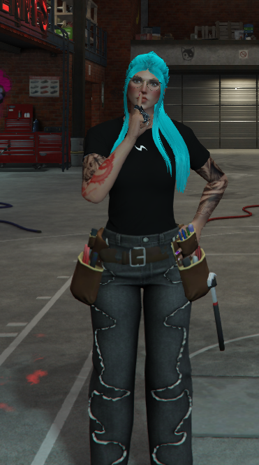
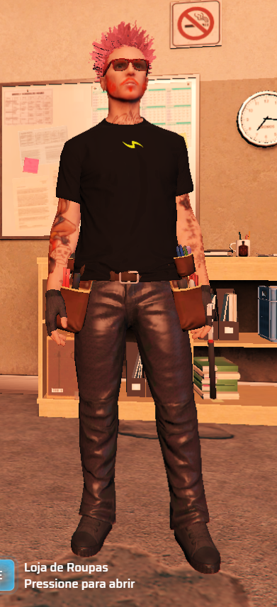
O uniforme serve para organização e para identificarmos quem está em serviço.
↑ voltar ao índiceA opção 529 é a jaqueta aberta e a 528 é a jaqueta fechada.
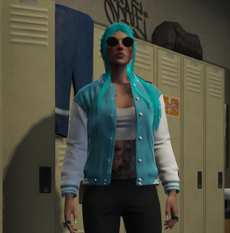
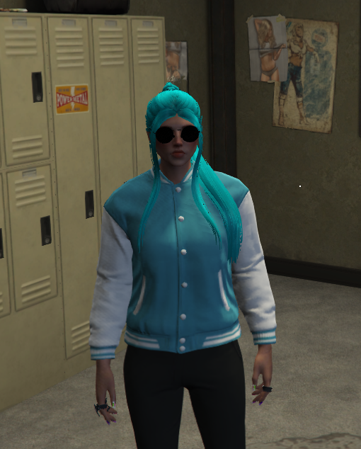
A opção 491 é a jaqueta aberta e a 490 é a jaqueta fechada.
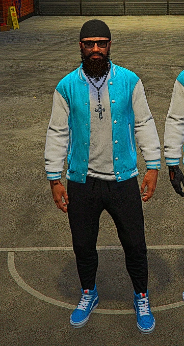
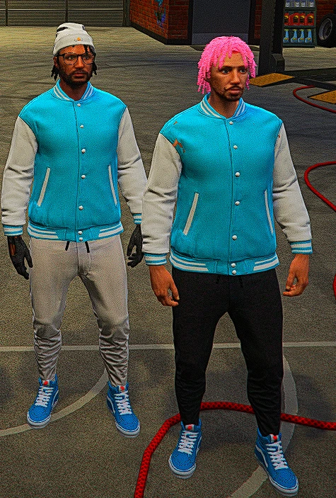